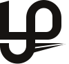

One letter.
One fold.
வேரே இறக்கை.
The ஆழி mark is ழ (zha), the sound at the heart of ஆழி and at the end of தமிழ். We drew it on the wordmark's own stroke and gave it a single fold: the root under the line becomes a paper plane. Built for Creating the next big tech minds from Tamil rural roots.
- aazhi-mark.svg primary, light grounds
- aazhi-mark-ink.svg ink, oxblood and sea grounds
- aazhi-mark-chilli.svg chilli grounds
- aazhi-mark-mono.svg one colour, the fold as a cut
- favicon.svg app icon, 16 px and up
- lockup.svg horizontal lockup
- css/logo.css the lockups as live HTML


Why ழ
ழ சொல்லத் தெரிஞ்சா, நீ நம்ம ஆளு.
ழ sits in the middle of our name, ஆழி, the deep sea, and at the end of தமிழ் itself. Only a few scripts write it, Tamil and Malayalam among them, and plenty of mouths never learn to say it.
Our students are that sound: from towns the map skips, hard to copy once they find their voice. So the mark is not a shape with Tamil sprinkled on top. It is the letter, and any Tamil reader sees ழ before they see a symbol.
Then we folded one stroke. The tail that grows below the line, the root, is creased once along its length and flies out past the bowl as a paper plane, the kind you fold on the last bench. Roots, launching.
root below the line → wing past the bowl
Construction
ஒரு கோடு. ஒரு கோணம்.
The rules, on 100 units
- One stroke
- W = 13 for every vertical and curve; horizontals at 11. At lockup size W matches the stem of ஆழி in Catamaran 900 (within 4%), so mark and name weigh the same.
- One angle
- 15°, rising to the right. The cut on the stem's top and the wing's underside are parallel. The crease splits that angle in half.
- One circle
- The bowl and the hook are the same circle (r 25.5), turned 180° about the stem. That is why the letter feels balanced with no ornament.
- The waterline
- y 57, the bottom of the base. In every lockup it sits on the text baseline. Everything below it starts one gap lower, at y 62.
- One fold
- The wing is two facets: lit on top, shade below. No other plane in the mark has a tone change.
The fold
மடிப்பு தான் பறப்பு.
Three flat shapes. The letter is one colour, no bevels. The only depth is in the wing, a strip of paper creased once, the way you crease a paper plane before it leaves your hand.
- The letter. ழ, flat chilli.
- Lit facet. The top of the wing, facing the light.
- Shade facet. Under the crease, turned away.
- The mark.

With one colour, the crease becomes a cut, so a rubber stamp, a laser cutter or an embroidery machine still gets the paper plane. On a chilli ground the letter turns ink.
Lockups
முத்திரை + பெயர்.
Four arrangements, one set of proportions. Build them in HTML with css/logo.css: the mark as inline SVG, the name as live text, so Catamaran and Archivo stay real type.
.logo.logo--h. Nav bars, decks, email signatures.
- Mark 1.2× the type size, its waterline on the baseline
- Gap mark to ஆழி: 0.36 em, one counter past the wing's nose
aazhi.Archivo 800 at 0.4 em, chilli full stop, 0.16 em after ஆழி
.logo.logo--stack. The mark leads at 1.7× and the name hangs off the stem's left edge. Footers, covers, merch..logo--compact drops the Latin when space is tight. Alone, the mark sits on a chilli tile: favicon, app icon, avatar.Space & size
பெருசோ சின்னதோ, ழ தான்.
Clear space
- x = the width of the mark's bowl, about two thirds of the ஆழி size. Keep x clear on every side. Nothing enters: no clip, no tape, no stamp.
- Lockup minimum: ஆழி at 20 px on screen, 6 mm tall in print.
- Mark minimum: 24 px. Under that, use the app icon.
On every ground
எந்த நிலத்திலும் நிக்கும்.
One colour rule: the letter is chilli, and the wing takes whatever the ground is not. Ink wing on light grounds, paper wing on dark ones. On chilli, the letter turns ink. .logo--on-dark and .logo--on-chilli do the switching.
- Chilli: the letter turns ink, the wing stays paper, oxblood full stop.
- Oxblood: chilli letter, paper wing.
- Paper: chilli letter, ink wing. The default.
- Fog: same as paper. The site's nav bar.
- Ink: chilli letter, paper wing.
- Sea: chilli letter, paper wing. Use the sea sparingly.
Do & don't
மடிச்சதை மறுபடி மடிக்காதே.
Do keep one bowl-width of clear space on every side.
Do follow the colour rule: chilli letter, wing in the colour the ground is not.
Do switch to the app icon under 24 px.
Don't type ழ in a font and call it the mark. Use the drawing.
Don't flip it. The wing always flies right.
Don't put a chilli letter on a chilli ground. Use
--on-chilli.Don't add gradients, glows or shadows. The fold is the only depth.
Don't outline it. Edges come from flat colour.
Don't rotate, italicise or stretch it. The wing already gives it lift.